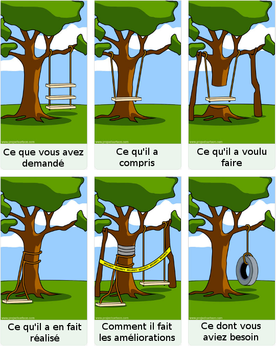
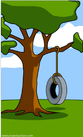

- Beaucoup de bénévolat
- Pas avec des associations
- Développeur: conçoit et réalise des applications, des sites web, etc
- Administrateur réseau/système: gestionnaire de système
- Administrateur de bases de données
- Techicien de maintenance: gère les postes de travail/imprimante/réseau
- etc. etc. etc.
- Conception et réalisation
- Grande concentration sur de longues périodes
- En moyenne, un don de temps de 2,5h/semaine
- mais 2/3 des bénévoles: 1h (8% du total)
- Statistiquement: dispersion importante
- Discuter et comprendre son travail
- Définir l'essentiel
- Favoriser les tâches courtes
- Y aller par étape
- Développer une solution informatique et l'utiliser sont deux tâches très différentes
- Concentrez-vous sur l'expression de votre besoin,
et co-concevez la solution - Collaboration, pas consommation
- Un site web
- Une application (gestion, communication, etc) ?
- De nouvelles fonctionnalités
- Du graphisme, des logos ?
- Des initiations aux outils ?
- Ce que vous exprimerez
- Proposition de projets par les associations
- Analyse et sélection
- Présentation des projets aux développeurs
- Constitution des équipes
- Collaboration inter-équipes encouragée
- L'association fait partie de l'équipe
- Deux jours pleins
- Présentation de tous les projets à la fin
- Réalisations terminées
- Utilité immédiate
- Autonomie d'utilisation
- Les prises de contact
- Inciter les informaticiens au bénévolat local
Hackathon Citoyen
Présentation aux associations
Rodrigo Reyes - 22/06/2015
Hackathon
| hack- | Hacking (programmation exploratoire, modifier, améliorer) |
| -athon | Marathon (une course un peu éprouvante) |
Hackathon Citoyen ?
Un pont entre associations et informaticiensInformaticiens et bénévolats
Digression importante
Comprendre les informaticiens
De nombreux métiers spécialisés
Table des demandes de dépannage gratuit
| Garagiste | Avocat | Informa- ticien | |
|---|---|---|---|
| Proche |  |
|
|
| Famille éloignée | |
 |
|
| Voisins | |
|
|
| Connaissances | |
|
|
| Inconnu rencontré il y a moins de 5 minutes | |
|
|
| Parfaits étrangers | |
|
|
Revenons aux informaticiens et aux associations
Que fait un développeur ?
Quelques chiffres (INSEE, 2004)
Difficultés pour les développeurs
→ Difficile de donner seulement 1h par semaine
→ Les mêmes problèmes que pour un développement classique

Comment gérer ?
Gardez en tête
Fin de la digression
Hackathon Citoyen
Quels projets
Déroulement
Le week-end
Le travail des bénévoles s'arrête à la fin du week-end
Mesure du succès
